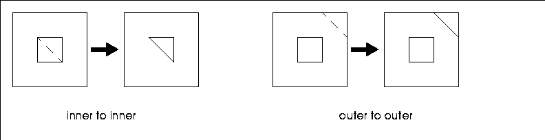
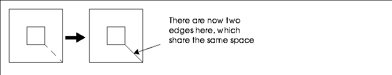
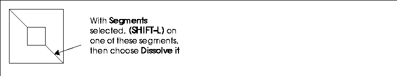
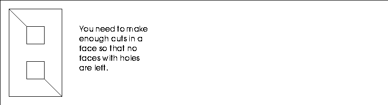
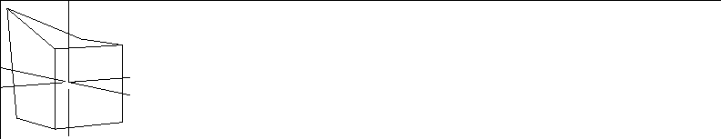
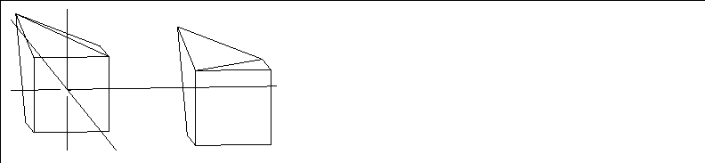

[N-World Contents] [Book Contents] [Prev] [Next] [Index]
Troubleshooting
Faces with Holes
Most operations that function with simple faces can also be used with faces that have holes.
One of the most important considerations, however, is that faces with holes do not render properly. This means you have to make sure that none of the faces on your objects contain holes.
The editor disallows some operations on such faces, because the effects are either counterintuitive or produce geometrically invalid shapes. The following operations, performed on faces with holes, yield unpredictable results:
If you attempt to use any of these operations on a face with a hole, a warning is displayed, which you must acknowledge before continuing with the operation.
Topological operations not supported are Edge Subdivide and Vertex Subdivide. If you attempt to apply one of them to a polyhedron that has faces with holes, N-Geometry rejects the operation with a warning. Once all faces with holes have been removed (by cutting), the operations will work.
The only currently supported topological operations are:
Extrude, Lift from Vertex, and Lift from Edge work as they do for simple faces.
When you Cut a face with one hole, there are three types of cuts you can make:
In the first two cases, the cut operation is normal, creating an edge between the two selected points and a new (simple) face on one side.

Figure A.1 Cutting a face from inner to inner, and outer to outer
While the faces with holes still need to be cut to render properly, the face does not have any double edges, as occurs in a cut of the third type:

Figure A.2 Cutting from the inner to outer parameter on the face
When this type of cut is made, the cut creates two edges that share the same position on the face; while this shape is topologically edge, a double edge on a face cause the face to render improperly.
The solution is to make a second cut somewhere else on the face:
Figure A.3 Making a second cut on the face
Finally, one of the edges in the double edge should be deleted:

Figure A.4 Dissolving one of the coincident edges
Double edges have now been removed from the face, and you now have two faces that can be properly rendered.
The Dehole Operation
If the face you are working with has only a single hole, you can choose the Dehole operation to break the face into a renderable set of faces. This performs the same set of operations as described above with only a single click. However, the Dehole operation may not cut the face where you want it to break; if you don't care where the face gets cut, you may wish to just use the Dehole function. Also, the Dehole operation may not work properly if the hole is concave; again, you may want to use the Cut operation to make cuts explicitly.
Using Cull Elements to Get Rid of Double Edges
Note that for faces with multiple holes, it may become difficult to determine whether a given edge is double or not:

Figure A.5 Faces with multiple holes and enough cuts
When you make the cuts shown in Figure A.5, both of them create double edges; but because double edges don't show any differently than single edges, you might not realize you have a double edge until you render the shape, and if you are making numerous cuts on a face, it may become very confusing.
The easiest thing to do to check such edges is to use the Cull Elements command to check the face's integrity:
1. (SHIFT-L) on the face.
2. Choose Cull Elements.
- A submenu appears with several items to check for.
3. Choose Double Edges.
- In the UNIX shell window, you're notified if any double edges were corrected.
The Cull Elements command is not limited to use on faces with more than one hole; it can be used on any face to check for the existence of double edges.
Non-Planar Faces
Non-planar faces are often caused by two types of operations:
The nonplanar face in Figure A.6 was created using Move on a point on the cube.

Figure A.6 Cube with a nonplanar face
Normally you don't have to worry about slightly nonplanar faces. Most renderers triangularize all faces before rendering them so that the shading of such faces is constant over an animation. If you have a severely warped face, however, the renderer might subdivide a non-planar face in a manner you did not intend.
Figure A.7 illustrates the two ways in which a nonplanar face might be cut, and the two are rendered quite differently.
- Note. If you have such warped faces, it is best to cut them explicitly yourself by selecting the non-planar face, then using the Cut operation and choosing the two points along which the face should be cut.

Figure A.7 Two ways to cut a nonplanar face
[N-World Contents] [Book Contents] [Prev] [Next] [Index]
 Another fine product from Nichimen documentation!
Another fine product from Nichimen documentation!
Copyright © 1996, Nichimen Graphics Corporation. All rights
reserved.